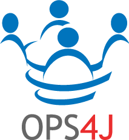

OPS4J
OPS4J stands for Open Participation Software for Java. OPS4J is a community that is trying to build a new, more open model for Open Source development, where not only the usage is Open and Free, but the Participation is Open as well. Removal of barriers, let more people in, have more fun and less politics. Open Development has also been used to describe this concept.
